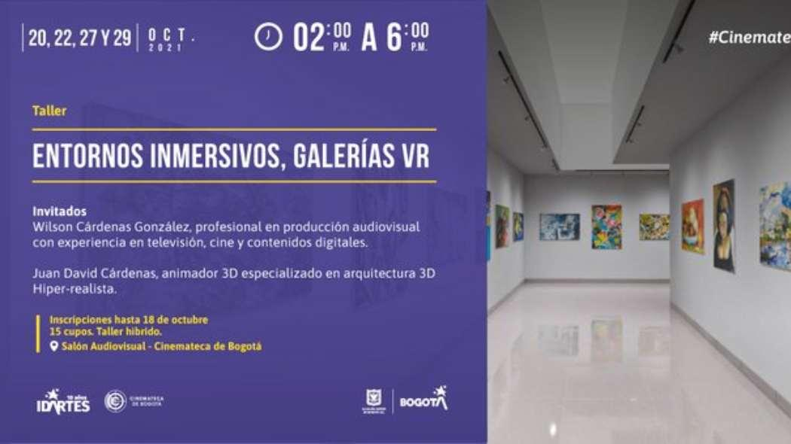
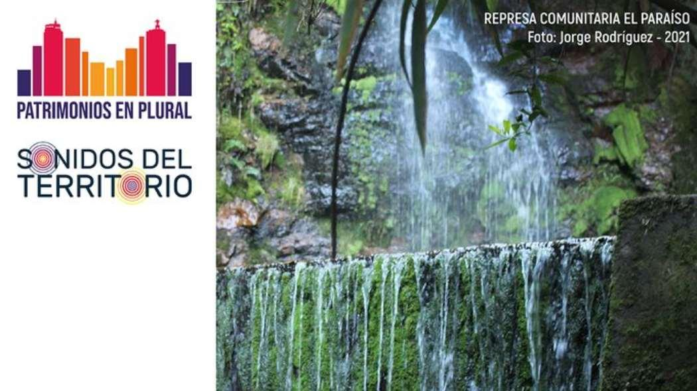

City
Bogotá
Bogotá, officially Bogotá, Distrito Capital, abbreviated Bogotá, D.C., and formerly known as Santa Fe de Bogotá during the Spanish period and between 1991 and 2000, is Colombia's capital and largest city, administered as the Capital District, as well as the capital of the surrounding department of Cundinamarca, though it is not part of it. Bogotá is a first-class territorial unit, with the same administrative status as Colombia's departments. It is the country's political, economic, administrative, and industrial hub.
After a difficult voyage into the Andes conquering the Muisca, the indigenous inhabitants of the Altiplano, Spanish conquistador Gonzalo Jiménez de Quesada founded Bogotá as the capital of the New Kingdom of Granada on August 6, 1538. Santafé (as it was known after 1540) became the seat of the Spanish Royal Audiencia of the New Kingdom of Granada (founded in 1550), and then the Viceroyalty of New Granada's capital after 1717. Bogotá became the capital of the sovereign nation of Gran Colombia after the Battle of Boyacá on August 7, 1819. Simón Bolvar was the one who renamed the city Bogotá in honor of the Muisca people and as an act of freedom against the Spanish rule. As a result, Bogotá has remained the capital of this province since the Viceroyalty of New Granada's independence from the Spanish Empire and the foundation of modern-day Colombia.
The city is in the heart of Colombia, on a high plateau known as the Bogotá savanna, which is part of the Altiplano Cundiboyacense in the Andes' Eastern Cordillera. With an average elevation of 2,640 meters (8,660 feet) above sea level, Bogotá is the third-highest capital in South America and the world, after Quito and La Paz. Bogotá, which is divided into 20 municipalities, covers 1,587 square kilometers (613 square miles) and has a mild climate that is consistent throughout the year.
The city is in the heart of Colombia, on a high plateau known as the Bogotá savanna, which is part of the Altiplano Cundiboyacense in the Andes' Eastern Cordillera. With an average elevation of 2,640 meters (8,660 feet) above sea level, Bogotá is the third-highest capital in South America and the world, after Quito and La Paz. Bogotá, which is divided into 20 municipalities, covers 1,587 square kilometers (613 square miles) and has a mild climate that is consistent throughout the year. The capital is the primary destination for new foreign direct investment projects coming into Latin America and Colombia, as well as the country's main financial market and the Andean natural region. It boasts the country's greatest nominal GDP, accounting for over a quarter of the total (24.7 percent ).
El Dorado International Airport, named after the legendary El Dorado, handles the most cargo in Latin America and is the third busiest in terms of passenger traffic. Bogotá is the country's largest university and research center, as well as a major cultural center with numerous theaters, libraries, and museums.
What to do?
Learn content creation techniques for a virtual reality gallery
Bogota, Colombia
More information 
The Cinemateca de Bogotá and the audiovisual arts management of Idartes invite you to participate in the workshop: Immersive environments, VR galleries by Wilson Cárdenas and Juan David Cárdenas.
This workshop will explore creative techniques for immersive environments on the web. From pre-production to the production of content for a virtual reality gallery.
Don't miss the new chapter of IDPC's 'Sounds of the Territory
Bogota, Colombia
More information The District Institute of Cultural Heritage (IDPC) invites all citizens to enjoy the episode "Conversations of water", of the podcast series 'Sounds of the Territory' consisting of 25 episodes co-produced between the (IDPC), the production company Fresa Producciones and the inhabitants of the localities of Usme, Ciudad Bolivar and the Historic Center of Bogota; as part of the communication strategy 'Patrimonios en Plural' of the IDPC.
Participate in the talk 'Imaginaries and reality of the disabled population
Bogotá, Colombia
More information
As part of the commemoration of the International Day of Disability, the Ministry of Health will hold a discussion on 'Imaginaries and reality of the population with disabilities, voices, and actors in the health sector.
During the day there will be a presentation on the transformation of imaginaries, body, and disability by Dr. Guillermo Rodriguez Uribe, psychologist, and Master in disability and social inclusion from the National University.